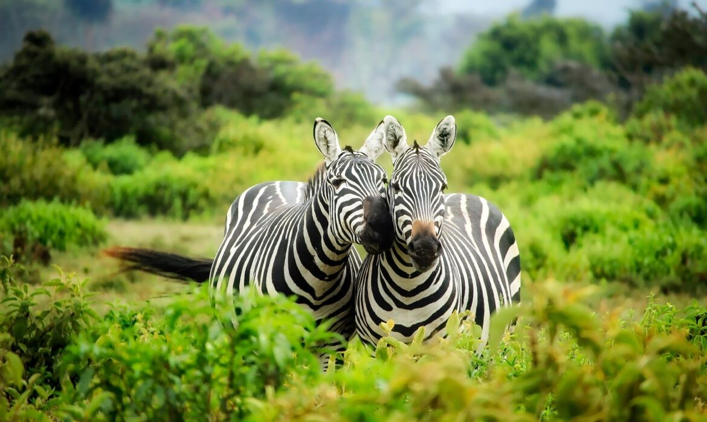
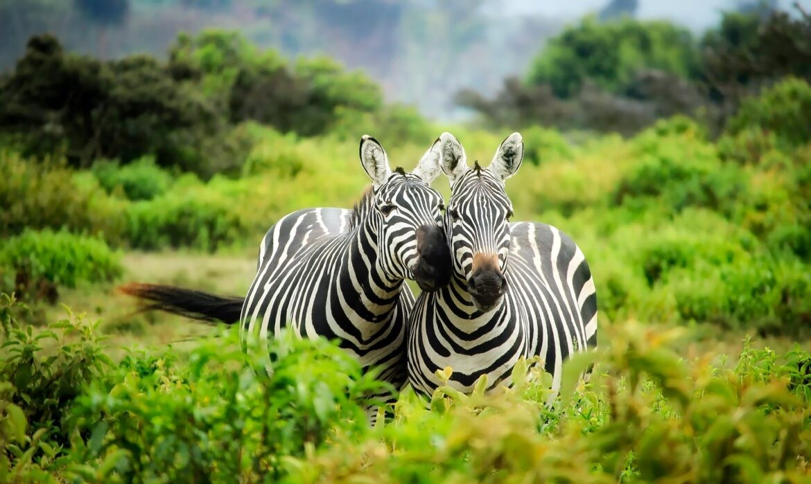

Give some love to
Animal welfare is not just about animals. It is about us. Our living conditions, our children, our earth.

Animal welfare is not just about animals. It is about us. Our living conditions, our children, our earth.
ECOguardians is a passionate NGO dedicated to environmental conservation. Our mission is to safeguard our planet by restoring ecosystems and protecting forests from invasive species.We believe in the power of trees to combat climate change. Join us in planting forests and restoring green cover. We believe in healing our planet. EcoGuardians actively works towards restoring degraded forests in South India. Our community-participative model involves indigenous communities, integrating their knowledge into restoration projects.

 

The IPD is 24-hour facility & houses over 3000 animals at any given point

A 24-hour service with an animal ambulance that works through the night.
The IPD has ICU centers for both large and small animals.
The OT is the hub of SGACC's ongoing Animal Birth Control Programme.
Our laboratory is equipped with an x-ray machine, bood testing facility.
Animal Birth Control or ABC is our key programme.
Max was found wandering the streets, alone and frightened. He was severely underweight and suffering from a skin condition due to neglect. Our rescue team spotted him near a busy highway, trembling with fear and desperation.
We brought Max to our shelter, where he received immediate medical attention. Our dedicated vets treated his skin condition, and he began to gain weight with proper
nutrition. Max's journey wasn't just about physical healing; he needed to learn to trust humans again. Our team of volunteers spent countless hours with Max, offering him love and patience.
Slowly but surely, Max began to show his playful side. His eyes brightened, and his tail wagged more each day. After several months of care and rehabilitation, Max was ready for adoption.
That's when the Smith family came into the picture. They had recently lost their beloved dog and were looking for a new furry friend to join their family. When they met Max,
it was love at first sight. Max's gentle nature and playful spirit won them over instantly.
Today, Max is thriving in his new home. He enjoys long walks in the park, playing fetch in the backyard, and snuggling up with his new family. The Smiths often share photos and updates, and it's clear that Max has found his forever home.
Max's story is just one of many successes that drive us to continue our mission. Every dog deserves a second chance, and with your support, we can ensure more happy endings like Max's. Thank you for being a part of our journey.
B-32, Royal Park, MG Road, Shivaji Nagar, Pune
ecoguardians@gmail.com
9271465987
9 AM to 5 PM
Unity in Diversity